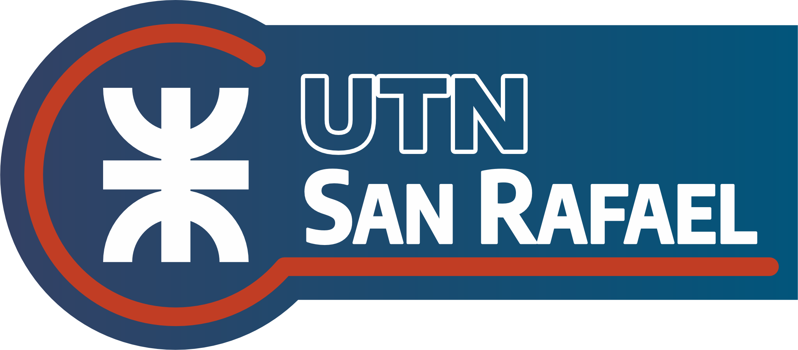

Experiencia Relevante / Proyectos Destacados
Desarrollador Web(Freelance / Proyecto Personal)
Pagina Web para Mio Fausto
15/02/2025 - 16/03/2025
- Diseño y desarrollo completo de un sitio web responsive para Mio Fausto utilizando **WordPress**
- Implementacion de: galeria de productos, integracion de redes sociales, carrito Woocommerce
- Personalizacion del tema Flatsome Thema y optimizacion basica para una carga rapida
- colaboracion directa con el cliente para entender sus necesidades y traducir los requerimientos del negocio en funcionalidades web
- Enlace sitio web: Mio Fausto
Mis Estudios
03/2025 - Hasta la fecha
Título: Técnico Universitario en Programación (en curso) • UTN Facultad Regional San Rafael

Actualmente me encuentro cursando el **primer año** de la carrera de Técnico Universitario en Programación en la Universidad Tecnológica Nacional (UTN) - Facultad Regional San Rafael, y estoy por finalizar el **primer semestre**. Durante este período inicial, he adquirido sólidas bases en lógica de programación, principios de desarrollo web y resolución de problemas algorítmicos. Mi formación me está capacitando en el desarrollo y corrección de programas, análisis de datos y colaboración en tareas de sistemas.
.Habilidades Clave
- Lenguajes: Python, HTML, CSS, (conocimientos básicos de) JavaScript
- Bases de Datos: SQL (conocimientos básicos)
- Control de Versiones: Git (uso básico)
- Herramientas: Visual Studio Code, Terminal
- Conceptos: Programación Orientada a Objetos (POO), Algoritmos, Estructuras de Datos